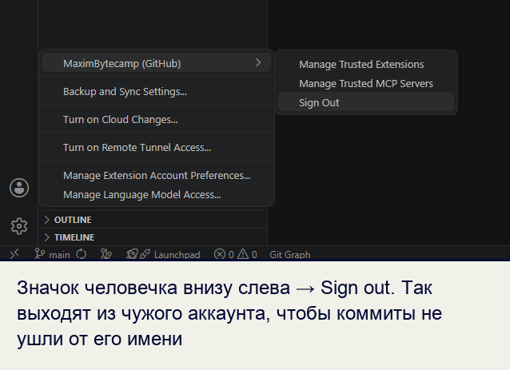
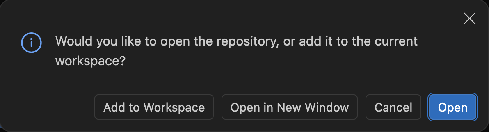
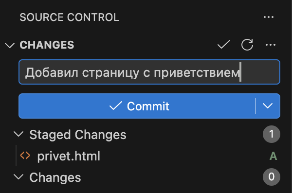
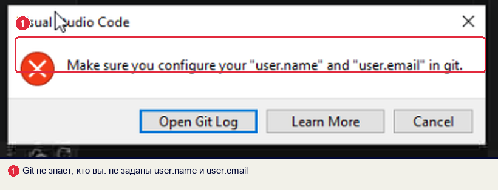
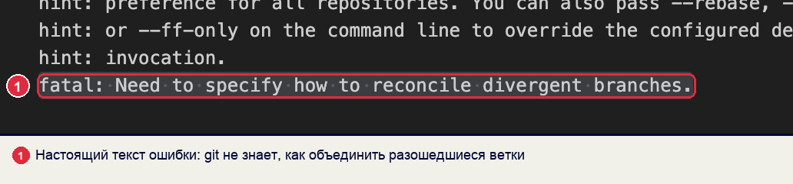

ДУП.02 Введение в Python · инструкция для студентов
22.10.2026
Репозиторий курса:
от создания до сдачи работ
В инструкции разобрано, как создать репозиторий для работ по дисциплине, как подготовить к работе компьютер колледжа и свой компьютер, как сдать работу и как получить новые задания. У каждого шага есть кадр экрана, команда или схема.
- Для кого
- Студенты 1 курса, дисциплина ДУП.02
- Что понадобится
- Аккаунт GitHub, VS Code и Git
- Что получится
- Свой репозиторий
python-startсо всеми работами - Сколько занимает
- Первый раз около 20 минут, дальше 2–3 минуты в начале пары
§1Три копии: шаблон, репозиторий, папка
Порядок работы похож на сдачу письменных работ. У преподавателя лежит методичка с бланками заданий. Каждый студент получает свою папку для работ и складывает в неё заполненные бланки. Черновики он пишет за партой, а в папку кладёт готовое.
С репозиторием так же, только копий три. Шаблон курса ведёт преподаватель: в нём задания, заготовки и конспекты. Ваш репозиторий — копия шаблона на GitHub, в неё сдаются работы. Папка на компьютере — копия вашего репозитория, в ней вы пишете и запускаете код. Репозиторий — это папка проекта вместе с историей всех сохранённых изменений.
На схеме — три копии и действия, которые их связывают:
Из схемы следуют два правила. Работа сдана, когда она есть в вашем репозитории на GitHub: папку на компьютере преподаватель не видит. Новые задания приходят сначала на GitHub, на компьютере они появляются после Sync Changes.
Зачем это нужно в работе
- Код команды. В компании проект лежит в общем репозитории. Каждый разработчик работает в своей копии на компьютере и отправляет туда изменения.
- Портфолио. Открытый репозиторий с работами курса можно показать работодателю: по истории видно, что и когда сделано.
- Работа с разных компьютеров. На паре и дома — две копии одного репозитория. Флешка не нужна: изменения переходят через GitHub.
Первая копия уже есть: шаблон курса создан преподавателем. Чтобы получить вторую, нужен аккаунт на GitHub.
§2Аккаунт GitHub и почта для коммитов
Если аккаунт на GitHub уже есть, переходите к шагу 2.
Шаг 1. Зарегистрироваться
Откройте github.com/signup. Введите почту, пароль и имя пользователя — логин. Подтвердите почту кодом из письма.
Логин входит в адрес каждого вашего репозитория. Его увидят преподаватель и работодатель, поэтому логин составляют из имени и фамилии латиницей:
Шаг 2. Скопировать служебную почту
Каждое сохранение в Git — коммит — подписано именем и почтой автора. Это похоже на обратный адрес на конверте: по нему GitHub находит ваш профиль. Репозиторий открытый, подпись видна всем. Поэтому для коммитов GitHub выдаёт служебный адрес: он ведёт на ваш профиль и скрывает настоящую почту.
- Нажмите на аватар справа вверху → Settings → слева Emails.
- Отметьте пункт Keep my email addresses private.
- Под пунктом написан адрес вида
12345678+ivan-petrov@users.noreply.github.com. Скопируйте его в заметки: он понадобится при настройке Git на компьютере.
С включённым пунктом Keep private GitHub отклоняет коммиты с настоящей почтой: отправка заканчивается ошибкой GH007. Коммиты с почтой, которая не привязана к аккаунту, не появляются на графике активности в профиле.
Что получилось.Есть аккаунт с понятным логином и служебная почта для коммитов.
Аккаунт готов. Следующий шаг — создать в нём копию шаблона курса.
§3Копия шаблона: Use this template
На странице шаблона есть две кнопки для копирования: Use this template и Fork. Результат у них разный.
Fork · не использовать
Копия, привязанная к оригиналу.
- Под именем надпись
forked from - Коммиты не попадают в график активности профиля
- Перенос новых заданий не работает
Use this template · так создаём
Самостоятельный репозиторий с копией всех файлов.
- Под именем надпись
generated from - Коммиты попадают в график активности
- Новые задания приходят каждый день
Шаг 1. Открыть шаблон
Откройте github.com/MaximBytecamp/python-start-template. Справа над списком файлов нажмите Use this template → Create a new repository.
Шаг 2. Заполнить форму
| Поле | Что указать |
|---|---|
| Include all branches | не отмечать |
| Owner | ваш логин |
| Repository name | python-start |
| Description | Мои работы по Python: домашние, практические, задачник |
| видимость | Public: репозиторий открывают преподаватель и работодатель |
Нажмите Create repository. GitHub откроет страницу нового репозитория.
Что получилось.Под именем репозитория написано generated from MaximBytecamp/python-start-template. Если там forked from или надписи нет, удалите репозиторий (Settings → внизу Delete this repository) и создайте заново.
В репозитории лежат файлы шаблона. Первым гость репозитория видит файл README.md, его заполняют следующим.
§4Визитка репозитория
Файл README.md из корня GitHub показывает под списком файлов. Он работает как обложка папки с работами: по нему понятно, чьи работы и что внутри. Этот файл ваш, перенос заданий от преподавателя его не меняет.
Шаг 1. Вписать себя
Откройте README.md → значок карандаша ✎ справа вверху. Замените Имя Фамилия на свои, впишите группу. Нажмите Commit changes…. В окне оставьте пункт Commit directly to the main branch и нажмите Commit changes.
Шаг 2. Добавить темы
Справа на странице репозитория найдите блок About и нажмите шестерёнку ⚙. В поле Topics введите python, python3, learning → Save changes. По темам репозиторий находится в поиске GitHub.
Шаг 3. Отправить ссылку преподавателю
Скопируйте адрес из строки браузера: https://github.com/ваш-логин/python-start.
Разделы визитки:
README.md в корне вашего репозитория
Почему разделы такие — на странице стандарта репозитория.
Что получилось.Репозиторий подписан вашим именем, у преподавателя есть его адрес.
Репозиторий на GitHub готов. Дальше его копию нужно получить на компьютер, за которым вы работаете.
§5Начало пары за компьютером колледжа
Компьютер в аудитории похож на общий телефон. Если прошлый хозяин не вышел из мессенджера, ваше сообщение уйдёт от его имени. На компьютере колледжа до вас работали другие студенты. Их вход в GitHub мог остаться в четырёх местах:
Где остаётся вход прошлого студента
Пока там чужой вход, ваши коммиты уйдут с чужой подписью или GitHub не примет отправку. Проверка занимает пару минут и выполняется в начале каждой пары.
Шаг 1. Браузер: войти в свой GitHub
Откройте github.com. Если справа вверху чужой аватар, нажмите на него → Sign out. На странице подтверждения снова нажмите Sign out. Затем нажмите Sign in и войдите в свой аккаунт.
Шаг 2. VS Code: выйти из чужого аккаунта
Внизу левой полосы VS Code — значок человечка. Если в меню чужое имя, наведите на него и нажмите Sign Out.

Шаг 3. Удалить сохранённый вход Git
Git хранит вход в GitHub отдельно от VS Code — в хранилище паролей системы. После выхода из VS Code запись прошлого студента остаётся там. Её удаляют вручную.
- Нажмите Пуск, наберите Диспетчер учётных данных и откройте его.
- Выберите вкладку Учётные данные Windows.
- В списке «Общие учётные данные» найдите записи со словом
github, напримерgit:https://github.com. - Раскройте каждую стрелкой → Удалить → Да.
То же одной командой в терминале VS Code:
cmdkey /delete:git:https://github.com
- Нажмите Cmd + Пробел, наберите Связка ключей и откройте программу.
- В поле поиска справа вверху введите
github.com. - Каждую найденную запись удалите: правая кнопка мыши → Удалить.
- Откройте программу Пароли и ключи (Seahorse).
- В поиске введите
github.com. - Каждую найденную запись удалите: правая кнопка мыши → Удалить.
Если записей со словом github нет, шаг пропускается.
Шаг 4. Склонировать свой репозиторий
Клонирование — скачивание репозитория на компьютер вместе с историей. Откройте панель Source Control: CtrlCmd + Shift + G. Нажмите Clone Repository, затем Clone from GitHub.

VS Code попросит разрешение на вход: нажмите Allow. Откроется браузер. Нажмите в нём Continue или Authorize Visual-Studio-Code и вернитесь в VS Code. Если браузер предлагает войти от чужого имени, вернитесь к шагу 1.
В списке выберите ваш-логин/python-start. Папку для копии укажите в Документах. Рабочий стол и «Загрузки» не подходят: там файлы теряются среди скачанного. Когда загрузка закончится, VS Code спросит, что делать с проектом:

Шаг 5. Указать Git своё имя и почту
Настройки Git хранятся на уровнях. Уровень папки проекта (local) действует только в этой папке. Уровень учётной записи компьютера (global) действует во всех папках. Если имя задано на обоих уровнях, Git берёт имя из папки проекта.
python-start получат вашу подпись, даже если на компьютере осталось имя прошлого студента.Поэтому на общем компьютере имя и почту задают без ключа --global. Откройте терминал: меню Terminal → New Terminal. Он откроется сразу в папке репозитория. Выполните три команды, подставив своё имя и служебную почту из §2:
git config user.name "Иван Петров" git config user.email "12345678+ivan-petrov@users.noreply.github.com" git config pull.rebase false
Первые две команды задают подпись коммитов. Третья задаёт способ объединения. Если на GitHub появились новые коммиты, а у вас свои, Git соединит их общим коммитом слияния. Без этой настройки Sync Changes в такой ситуации заканчивается ошибкой.

git config --show-scope --get-regexp user: на уровне global осталась Анна Смирнова, на уровне local — Иван Петров. Последняя строка — подпись, которую получит коммит.Проверка перед работой
homework, practice, problems, exams.git config user.email печатает вашу почтуСлужебную, из §2.Если вы склонировали репозиторий на этот компьютер раньше, откройте папку через File → Open Folder и нажмите Sync Changes. Шаги 1–3 выполняются всё равно: после вас за компьютером мог работать другой студент. Если сомневаетесь, чья это папка, склонируйте заново: всё сданное хранится на GitHub.
Что получилось.На компьютере открыта ваша копия репозитория, коммиты подписываются вашим именем.
Дома подготовка короче: компьютер ваш, и чужих входов на нём нет.
§6Свой компьютер дома
На своём компьютере настройка делается один раз. Python и VS Code устанавливаются по главе 0 справочника по Python. Отличия от компьютера колледжа сведены в таблицу:
| Что | Компьютер колледжа | Свой компьютер |
|---|---|---|
| Проверка чужих входов | в начале каждой пары | не нужна |
| Клонирование | на каждой паре или после проверки папки | один раз |
| Имя и почта для Git | git config без --global, в папке проекта | git config --global, один раз |
| В конце работы | выход из всех аккаунтов | Commit и Sync Changes |
Шаг 1. Установить Git
Скачайте установщик с git-scm.com/downloads/win. На всех экранах установщика нажимайте Next. После установки перезапустите VS Code.
Откройте терминал и выполните git --version. Если Git не установлен, система предложит поставить инструменты разработчика. Нажмите Установить.
Установите Git из менеджера пакетов: sudo apt install git в Ubuntu и Debian.
Шаг 2. Указать Git имя и почту для всего компьютера
Компьютер ваш, поэтому настройка ставится на уровне global и действует во всех папках:
git config --global user.name "Иван Петров" git config --global user.email "12345678+ivan-petrov@users.noreply.github.com" git config --global pull.rebase false
Шаг 3. Склонировать репозиторий
Так же, как в шаге 4 §5: Clone Repository → Clone from GitHub → python-start → папка в Документах → Open.
Что получилось.Копия репозитория лежит на вашем компьютере. VS Code открывает её при запуске. Перед работой нажмите Sync Changes, чтобы забрать новое с GitHub.
Компьютер подготовлен. Теперь о том, куда класть работы, чтобы преподаватель находил их по одному пути у всех студентов.
§7Куда класть работу и как называть файлы
Репозиторий устроен как скоросшиватель с разделителями. Для каждого вида работ своя папка, внутри — по папке на работу. Набор папок задан шаблоном, новые папки верхнего уровня не создаются.
Папки репозитория python-start
Подсвечены папки, в которые вы кладёте работы. Остальное обновляет преподаватель.
Где лежит каждый вид работы:
| Работа | Папка | Пример пути |
|---|---|---|
| домашнее задание | homework/NN-тема/ | homework/01-variables/task_01.py |
| практическая на паре | practice/NN-тема/ | practice/01-variables/main.py |
| задача из задачника | problems/chapter-глава/ | problems/chapter-1-3/task_07.py |
| тест на сайте | exams/quiz-NN-…/ | код результата в README.md |
| контрольная | exams/exam-NN/ | exams/exam-01/task_03.py |
Имя папки для ДЗ и практической работы берётся из таблицы в homework/README.md и practice/README.md. Преподаватель дописывает туда строку, когда выдаёт работу. Имена файлов подчиняются правилам:
| Правило | Так | Не так |
|---|---|---|
| латиница, без пробелов | task_01.py | задача 1.py |
| маленькие буквы | task_01.py | Task_01.py |
| номер двумя цифрами | task_07.py | task_7.py |
в файле .py слова через _ | task_01.py | task-01.py |
в папке слова через - | 01-variables | 01_Variables |
| имя называет содержимое | task_03.py | new.py, final2.py |
Номер из двух цифр нужен для порядка: task_10.py встаёт после task_09.py. Подчёркивание в именах .py нужно для импорта: в строке import task-01 Python прочитает дефис как минус. Образец оформления папки ДЗ — homework/00-example.
Место и имя известны. Дальше файлы нужно сохранить коммитом и отправить на GitHub.
§8Сдать работу из VS Code
Порядок одинаковый для всех видов работ. Все работы загружаются в ветку main, отдельные ветки и Pull Request не создаются.
Путь работы от папки до GitHub
Шаг 1. Забрать новое с GitHub
Нажмите Sync Changes в панели Source Control или значок обновления в строке состояния внизу. На компьютер придут новые задания и правки, сделанные через сайт.
Шаг 2. Создать папку и файлы
В проводнике VS Code наведите на папку homework и нажмите значок New Folder. Введите имя из таблицы, например 01-variables. На новой папке нажмите New File и введите task_01.py.
Шаг 3. Запустить каждый файл
Кнопка ▷ справа вверху или команда в терминале:
pythonpython3 homework/01-variables/task_01.py
Сверьте вывод с примерами задания.
Шаг 4. Сделать коммит
Откройте Source Control. В поле Message напишите, что сдаёте. Первое слово — папка, затем номер и что сделано.

| Работа | Сообщение коммита |
|---|---|
| ДЗ 1 | homework 01: задачи 1–3 |
| исправление в ДЗ 1 | homework 01: исправлен вывод в задаче 2 |
| задачник | problems 1.3: задачи 1–5 |
| практическая | practice 02: калькулятор скидки |
| тест | quiz 01: код результата |
| контрольная | exam 01: вариант 2, задачи 1–10 |
Нажмите Commit. VS Code может спросить There are no staged changes to commit. Would you like to stage all your changes…? Нажмите Yes: в коммит войдут все изменённые файлы.
Шаг 5. Отправить на GitHub
После коммита на месте кнопки Commit появится Sync Changes 1↑: один коммит готов к отправке. Нажмите её. Если VS Code попросит подтвердить отправку и получение коммитов, нажмите OK.

Что получилось.На странице репозитория на GitHub над списком файлов — ваше сообщение коммита и ваш логин. В папке homework появилась новая папка.
Если VS Code под рукой нет, работу можно сдать через сайт GitHub.
§9Сдать работу через сайт GitHub
Сайт подходит, когда файлы готовы, а VS Code нет: на чужом компьютере или с телефона. Пустые папки GitHub не хранит. Поэтому папка работы создаётся вместе с первым файлом.
Шаг 1. Создать папку работы
Откройте свой репозиторий → папку homework. Нажмите Add file → Create new file. В поле имени наберите 01-variables/README.md: знак / делает 01-variables папкой. В тексте файла напишите задание.
Шаг 2. Сохранить файл коммитом
Нажмите Commit changes…. В сообщении напишите homework 01: README. Оставьте пункт Commit directly to the main branch и нажмите Commit changes.
| Пункт в окне коммита | Что произойдёт |
|---|---|
| Commit directly to the main branch | файлы попадут в main, работа сдана |
| Create a new branch for this commit | файлы уйдут в отдельную ветку, в main их не будет; этот пункт не выбирают |
Шаг 3. Загрузить файлы решений
GitHub откроет новую папку. Нажмите Add file → Upload files и перетащите файлы task_01.py, task_02.py. Внизу напишите сообщение homework 01: задачи 1–2 и нажмите Commit changes.
Исправить файл на сайте: откройте его → карандаш ✎ → правка → Commit changes… → сообщение homework 01: исправлена задача 2.
Что получилось.Работа лежит в main. Если вы работаете ещё и в VS Code, перед следующей работой нажмите в нём Sync Changes, чтобы забрать загруженное через сайт.
Работы уходят на GitHub. Преподаватель в это время добавляет в шаблон новые задания, и они тоже должны попасть в ваш репозиторий.
§10Новые задания от преподавателя
Перенос заданий похож на папку с работами, в которую преподаватель раз в день подкладывает новые бланки. Свои бланки он заменяет свежими, а ваши листы оставляет как есть. Создавать репозиторий заново не нужно.
В репозитории лежит файл .github/workflows/update-materials.yml. Это задание для GitHub Actions — службы GitHub, которая запускает программы по расписанию. Каждый день в 06:00 по Москве она сравнивает ваш репозиторий с шаблоном и переносит новое. В истории это коммит materials: обновление из шаблона курса от github-actions[bot].
Какие файлы меняются при переносе:
Ведёт преподаватель · заменяется
lectures/— конспектыmaterials/— файлы с занятийdocs/— правила сдачиREADME.mdвhomework/,practice/,problems/,exams/— таблицы выданных работ- новые папки заданий и заготовки — добавляются, если их у вас нет
Ведёте вы · не меняется
- ваши решения
task_NN.py - ваши
README.mdв папках работ README.mdв корне — визитка- файлы, которые вы добавили в папки работ
Из этого следует правило: файлы из левой колонки не редактируйте. Правка в них пропадёт при следующем переносе.
Шаг 1. Забрать обновление сразу
Этот шаг нужен, когда задание выдано на паре и ждать утра нельзя. Откройте свой репозиторий → вкладка Actions → слева Обновление материалов курса. Справа нажмите Run workflow, затем зелёную Run workflow. Через полминуты в списке появится запуск.
| Значок запуска в Actions | Что означает |
|---|---|
| зелёная галочка | перенос прошёл; внутри запуска перечислены добавленные и обновлённые файлы |
красный крестик, текст шаблон не найден | репозиторий создан форком или вручную; создайте его заново по §3 и перенесите файлы |
Шаг 2. Забрать на компьютер
В VS Code нажмите Sync Changes. Новые папки появятся в проводнике.
В нём старые имена папок и нет файла обновления. Переименуйте старый репозиторий в python-start-old (Settings → Repository name → Rename) и создайте новый по §3. Перенесите решения: dz/dz-01-…/zadacha_1.py → homework/01-…/task_01.py, zadachnik/glava-1-3/ → problems/chapter-1-3/, kontrolnye/kr-01/ → exams/exam-01/, kontrolnye/test-01-… → exams/quiz-01-…, praktiki/pr-01-… → practice/01-…. Затем удалите старый: Settings → Delete this repository.
Что получилось.Новые задания есть и на GitHub, и в папке на компьютере.
Остаётся последний сценарий — уйти с компьютера колледжа так, чтобы следующий студент не получил доступ к вашему GitHub.
§11Конец пары за компьютером колледжа
Шаги обратные §5: каждый вход, который вы сделали, нужно закрыть.
Что закрыть перед уходом
Проверка перед уходом
Документы/python-start.Что получилось.Ваш вход и ваши файлы с компьютера удалены. Работы хранятся на GitHub, на следующей паре вы склонируете их заново.
Сценарии разобраны. Дальше — ошибки, которые встречаются чаще других, и как их исправить.
§12Где можно ошибиться
Полный текст ошибки VS Code показывает по кнопке Show Command Output или Open Git Log. Ниже ошибки собраны по тексту, который выводит Git.
Не заданы имя и почта

Выполните команды шага 5 §5 (дома — шага 2 §6) и снова нажмите Commit.
Отправка от чужого имени
remote: Permission to ivan-petrov/python-start.git denied to anna-smirnova. fatal: unable to access 'https://github.com/ivan-petrov/python-start.git/': The requested URL returned error: 403
Git отправил файлы по сохранённому входу прошлого студента. Удалите запись по шагу 3 §5 и снова нажмите Sync Changes. В открывшемся окне войдите в свой аккаунт.
GitHub скрывает почту
remote: error: GH007: Your push would publish a private email address.
В настройке Git стоит настоящая почта, а на GitHub включено её скрытие. Укажите служебную почту и переподпишите последний коммит:
git config user.email "12345678+ivan-petrov@users.noreply.github.com" git commit --amend --reset-author --no-edit
Затем нажмите Sync Changes.
Разошедшиеся ветки

Новые коммиты на GitHub появляются после переноса заданий или правки через сайт. Выполните git config pull.rebase false и снова нажмите Sync Changes.
Push отклонён
Can't push refs to remote. Try running "Pull" first to integrate your changes.
Кнопка Push только отправляет коммиты. Если на GitHub есть новые коммиты, отправка отклоняется. Нажмите Sync Changes: эта кнопка сначала забирает новое, потом отправляет ваше.
Конфликт в файле
<<<<<<< HEAD
print("Сумма:", total)
=======
print("Итого:", total)
>>>>>>> 7c1e9b2d5f0a…
Один файл изменён и на сайте, и на компьютере. Между <<<<<<< HEAD и ======= — версия с компьютера, ниже — версия с GitHub, после >>>>>>> — номер коммита с GitHub. Над блоком VS Code показывает кнопки. Accept Current Change оставляет версию с компьютера, Accept Incoming Change — версию с GitHub. Выберите нужную, сохраните файл, сделайте Commit и Sync Changes.
Ошибки без текста
| Что видно | Причина | Что делать |
|---|---|---|
Repository not found при клонировании | VS Code вошёл в другой аккаунт | шаги 1–2 §5, затем клонировать снова |
внизу слева не main | выбрана другая ветка | нажать на имя ветки → выбрать main; если в другой ветке уже есть коммиты, написать преподавателю |
| файл в другой папке или с другим именем | ошибка при создании | в проводнике перетащить файл или F2; коммит homework 01: файлы переименованы |
| коммиты с серым значком, в графике профиля их нет | почта коммитов не привязана к аккаунту | указать служебную почту из §2; новые коммиты свяжутся с профилем |
Кроме ошибок, на парах повторяются одни и те же вопросы. Ответы на них собраны ниже.
§13Частые вопросы
§14Шпаргалка
github.com/signup
Settings → Emails → Keep private
Use this template → python-start
браузер: свой аккаунт
VS Code: Sign Out чужого
удалить вход github из хранилища
Clone from GitHub → Документы
git config user.name "Имя Фамилия"
git config user.email "…@users.noreply.github.com"
git config pull.rebase false
Sync → файлы → ▷ → Commit → Sync
homework 01: задачи 1–3
homework/01-variables/task_01.py
problems/chapter-1-3/task_07.py
exams/exam-01/task_03.py
Sync: счётчика ↑ нет
Sign Out в VS Code и браузере
удалить вход github и папку
Итог
Репозиторий для работ создаётся один раз кнопкой Use this template и подписывается в README. В начале пары в колледже проверяются четыре места, где остаётся чужой вход. Затем репозиторий клонируется, а имя и почта задаются для папки проекта. Работа кладётся в папку по правилам имён, сохраняется коммитом и отправляется кнопкой Sync Changes. Новые задания переносятся каждый день по расписанию GitHub Actions, на компьютер их забирает Sync Changes. В конце пары закрываются все входы и удаляется папка.
- Перенос заданий проверен 22.10.2026 на закрытом репозитории, созданном из python-start-template.
- Учёт коммитов в графике активности — документация GitHub.
- Уровни настроек Git и подпись коммитов — глава 1.4 справочника по Git, клонирование — глава 2.2.
- Почему структура и имена такие — стандарт репозитория студента.